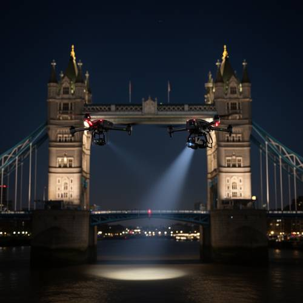
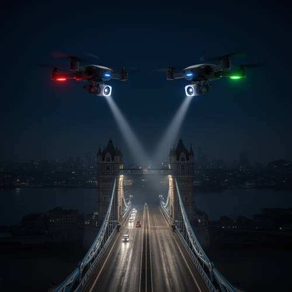
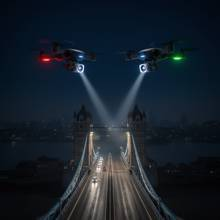

World Knowledge — Late at night above Tower Bridge, two similar-looking drones are hover
Late at night above Tower Bridge, two similar-looking drones are hovering in front of each other, with a searchlight illuminating the bridge deck below.

Direct — one call, no iteration

Continuum — Kimi K3 + FLUX.2-dev
Judge — Direct
PASSWorld Knowledge — The image displays a prominent, illuminated bridge at night, which is identifiable as Tower Bridge in London, with its characteristic two towers and connecting walkways.
PASSAction - State — Two drones are depicted in mid-air against the night sky, appearing stationary, which visually represents the act of hovering.
FAILAction - Non-contact Interaction — The two drones are positioned side-by-side, at a similar depth in the frame, rather than being one in front of the other.
FAILLogical Reasoning — A searchlight beam is shown originating from one of the drones, and another spot of light is visible on the water's surface. However, these lights are illuminating the river below the bridge, not the bridge deck as specified.
PASSRelationship - Similarity — The image features two drones that share a very similar design, including their black color, four-rotor configuration, and the equipment mounted underneath them.
Judge — Continuum
PASSWorld Knowledge — The image displays a large bridge with two prominent towers and upper walkways, which is an accurate depiction of the famous landmark, Tower Bridge in London. The scene is set at night over a river.
PASSAction - State — Two drones are depicted suspended in mid-air, with their propellers visible, suggesting they are actively flying and holding a stationary position, which is consistent with hovering.
PASSAction - Non-contact Interaction — The two drones are positioned in the upper portion of the frame, oriented towards each other in a mirrored, face-to-face configuration.
PASSLogical Reasoning — Each drone has a light on its front, and from each light, a visible beam is projected downwards. These beams converge on the roadway of the bridge, clearly illuminating parts of the bridge deck.
PASSRelationship - Similarity — The two drones have the same physical design, including the body, the number and placement of propellers, and the attached camera. They appear to be the same model, making them similar-looking.
What the agent did
Thinking
We need need generate image prompt. Must use flux2-dev, no seed. Need perhaps prompt interpretation. Need generate then inspect. User requests image. Need likely include two similar drones face-to-face above Tower Bridge late night, searchlight beam illuminating bridge deck below. Need maybe photorealistic. Generate 1024 square fixed. Let's call.
Step 1 — `generate_image`
{
"model": "flux2-dev",
"prompt": "Cinematic photorealistic night scene over London\u2019s Tower Bridge, viewed from a slightly elevated angle. Two nearly identical compact quadcopter drones hover face-to-face in the dark foreground sky, their muted navigation lights glowing red and green, with blue-white camera lenses aimed at each other. Below them, a powerful searchlight beam cuts through the haze and illuminates the Tower Bridge roadway deck, revealing stone towers, suspension cables, wet asphalt, and a few tiny vehicles. The Thames and dark London skyline stretch into the distance, deep midnight-blue atmosphere, realistic mist, dramatic contrast, high detail, no people in focus."
}
Result img_0

Thinking
We need inspect. Image seems good, but prompt says "with a searchlight illuminating bridge deck below" singular perhaps currently two beams one from each drone, converging or each beam. Could be accepted as searchlight illumination. Drones are similar-looking but one red vs green lights, bodies similar. They hover in front each other, Tower Bridge. Need perhaps mark best. Does composition have searchlights hitting bridge deck. Yes. Need no text. Could stop. Need mark best.
Step 2 — `mark_best`
{
"image": "img_0",
"reason": "The image clearly shows two similar drones facing each other late at night above Tower Bridge, with strong searchlight beams illuminating the bridge deck below."
}
Thinking
Need final concise.
Model
Generated the scene with two similar drones facing each other above Tower Bridge at night, their searchlights illuminating the bridge deck below.